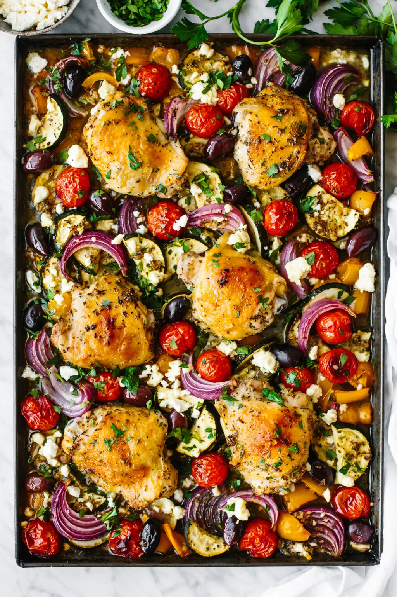

Greek Sheet Pan Chicken

An easy sheet pan meal that's ready in 30 minutes and loaded with layers of flavors from the spice rub, which features a mixture of chili powder, brown sugar, cumin, and more!
Ingredients
- ½ cup olive oil
- 1 lemon, juiced (about 3 tablespoons)
- 4 garlic cloves, minced
- 2 teaspoon dried oregano
- 1 teaspoon dried thyme
- 1 teaspoon Dijon mustard
- 1 teaspoon kosher salt
- ½ teaspoon freshly ground black pepper
- 6 chicken thighs, bone-in, skin-on
- 1 medium zucchini, halved lengthwise and sliced
- 1 yellow bell pepper, chopped into 1-inch pieces
- ½ large red onion, thinly sliced into wedges
- 1 pint cherry or grape tomatoes
- ½ cup kalamata olives, pitted
- ¼ cup feta cheese
- 2 tablespoons finely chopped fresh parsley
Directions
- Preheat the oven to 425°F (220°C). In a small bowl, whisk together the oil, lemon juice, garlic, oregano, thyme, Dijon mustard, salt, and pepper.
- Place the chicken thighs in a bowl and pour ⅔ of the marinade on top, then use your hands to toss the chicken in the marinade and make sure it's well coated. Marinate the chicken for 10 to 15 minutes.
- While the chicken is marinating, spread the zucchini, bell pepper, red onion, and tomatoes onto the baking sheet and drizzle the remaining marinade on top. Toss together to coat the vegetables.
- Add the chicken thighs the baking sheet, nestling them around the veggies, and bake for 30 minutes.
- Remove the baking sheet from the oven, add the olives and feta and then place it back in the oven for another 10 to 15 minutes, or until the vegetables are softened and the chicken is cooked through to 165°F.
- Sprinkle the chicken and vegetables with chopped fresh parsley before serving.